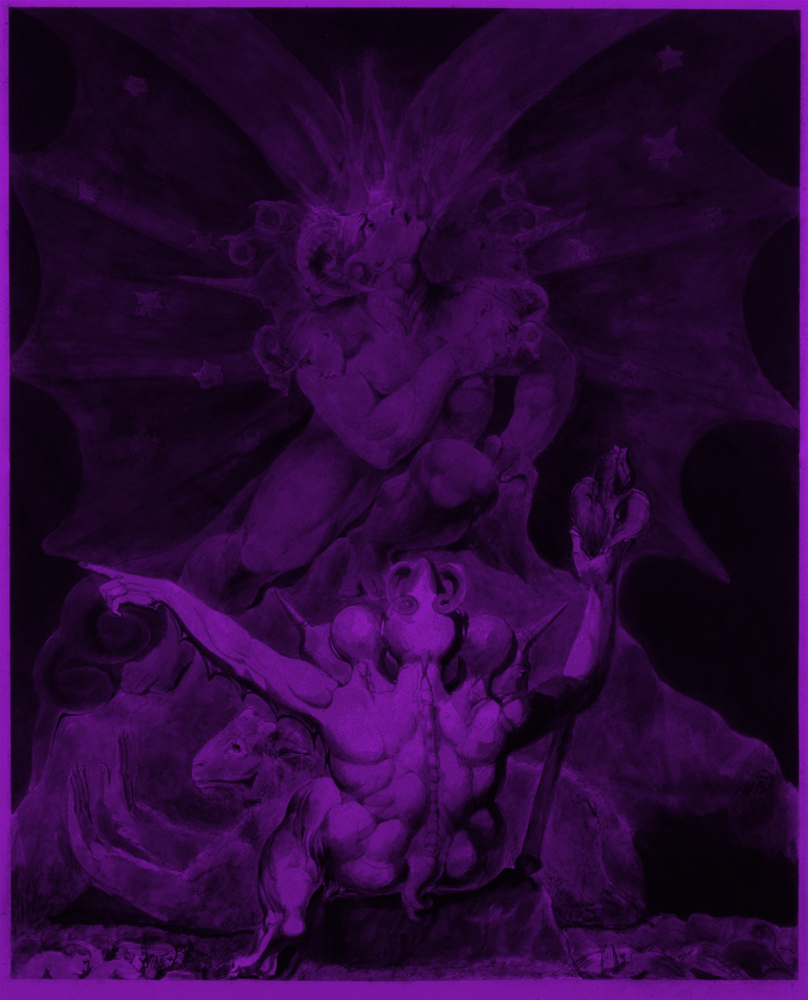
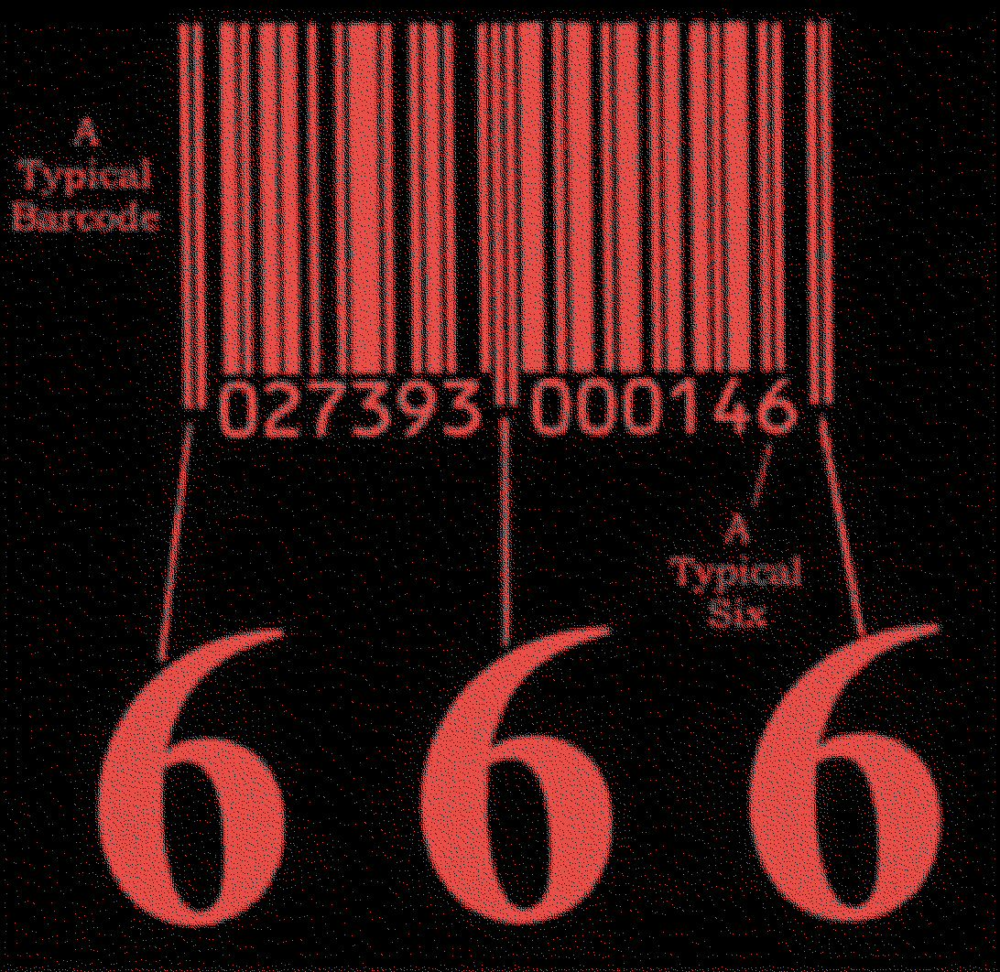

새로고침 refresh
검색 search
666은 요한계시록의 '짐승의 수'지만, 초대교회 시대 문맥에서는
게마트리아(문자를 숫자로 치환하는 암호 체계)로 네로 황제를
가리켰다는 설이 유력하다. 종교개혁 시기에는 이 숫자의 표적이
교황으로 옮겨갔다. 개신교 신학자들은 교황의 칭호 중 하나인 라틴어
"VICARIUS FILII DEI(하나님 아들의 대리자)"에서 로마 숫자로 읽을 수
있는 글자들만 뽑아 더하면 666이 된다고 주장하며, 네로를 겨눴던 이
게마트리아를 이번엔 교황을 적그리스도로 지목하는 도구로 재활용했다.
개신교에서 교황을 겨냥해 게마트리아를 쓰자, 루터파 신학자
미하엘 스티펠은 실제로 교황 레오 10세의 라틴어 칭호에서 666을
계산해내기도 했다. 결국 이 시기가 보여준 것은 특정 인물이 짐승이라는
확신이 아니라, 문자를 숫자로 바꾸는 계산법 자체가 표기와 칭호를 조금만
바꿔도 원하는 이름에 666을 맞출 수 있는 도구였다는 사실이다. 이 유연함
덕분에 666은 이후로도 그 시대마다 지목된 인물을 따라 옮겨 다니게 된다.
톨스토이는 나폴레옹의
이름에서 666을 찾아냈고, 후대에는 히틀러의 이름도 다른 문자-숫자
치환법으로 666에 꿰맞춰졌으며, 로널드 레이건은 성과 중간 이름,
이름이 각각 정확히 여섯 글자씩(Ronald·Wilson·Reagan)이라는 이유로
표적이 됐다. 이 소문이 끈질기게 따라붙은 탓에 레이건 부부는
1989년 벨에어 자택 주소를 실제로 "666 St. Cloud Road"에서 "668 St.
Cloud Road"로 변경하기까지 했다.
이후로는 특정 인물보다 시스템 자체가 의심받기 시작했다. 1970~80년대
복음주의 팸플릿들은 UPC 바코드의 가드바(guard bar) 패턴이 숫자
6을 세 번 숨기고 있다는 설을 퍼뜨렸고, 이 "숨겨진 666" 서사는 형태만
바꿔 이후 전 국민 신분증 번호, 마이크로칩 이식, 그리고 2020~21년
코로나19 백신을 "666"으로 지목하는 음모론으로 거의 그대로
반복됐다.
적그리스도(Antichrist)는 그리스어 "Antichristos"에서 온 말로, 문자
그대로는 "그리스도에 맞서는 자" 혹은 "그리스도 대신 오는 자"라는
뜻이다. 여기서 접두어 "anti"는 이중적인데, 통상 알려진 "반대·대적"이라는
뜻 외에도 "대신·자리를 차지하는"이라는 뜻을 동시에 지닌다. 즉 이
단어에는 처음부터 두 가지 함의가 겹쳐 있었던 셈이다. 그리스도를 정면으로
부정하고 맞서는 존재라는 뜻과, 그리스도인 척 그 자리를 가로채는 가짜
그리스도라는 뜻이다.
톨스토이의 소설 «전쟁과 평화»(1869) 9권 19장에 등장하는 허구의
장면이다. 주인공 피에르 베주호프는 프랑스어 알파벳의 앞 아홉 글자에
1~9, 나머지 글자에는 10 단위 숫자를 대응시키는 자기만의 문자-숫자
치환법을 고안한 뒤, "L'Empereur Napoléon(황제 나폴레옹)"이라는 문구의
숫자 합이 정확히 666이 된다는 걸 발견한다. 여기서 흥미로운 지점은
피에르가 멈추지 않았다는 것이다. 그는 이어서 자기 이름으로도 같은
계산을 시도하는데, 처음엔 666이 나오지 않자 관사의 철자를 슬쩍
바꿔("L'russe Besuhof"처럼 표기를 조정해) 결국 자기 이름도 666에
꿰맞추는 데 성공한다. 그리고 이 우연의 일치를 자신이 나폴레옹을
몰락시킬 운명이라는 계시로 받아들인다. 즉 톨스토이가 이 장면을 쓴
의도는 666의 진짜 의미를 밝히려는 게 아니라, 원하는 결론이 나올
때까지 규칙을 슬쩍슬쩍 바꿔가며 스스로를 설득하는 인간의 자기기만적
미신을 풍자하려는 것에 가까웠다.
마르틴 루터(1483~1546)는 가톨릭 교회의 면벌부 판매를 비판하며
종교개혁을 촉발한 독일의 신학자다. 그의 지지자였던 수학자 겸 신학자
미하엘 스티펠은 교황 레오 10세의 라틴어 칭호 "LEO DECIMVS"에서 로마
숫자로 읽히는 글자 L(50), D(500), C(100), I(1), M, V(5)를 뽑아 더하되,
M을 1000이 아니라 10으로 임의로 바꿔 계산해 합계를 666으로 맞췄다. 그는
이 결과를 근거로 교황권을 요한계시록의 짐승과 동일시하며 종교개혁의
정당성을 뒷받침하는 논거로 삼았다.
UPC 바코드는 좌측 끝, 중앙, 우측 끝에 각각 "가드바"라는 가늘고 긴
기준선 쌍을 두는데, 이는 숫자를 나타내는 게 아니라 스캐너가 바코드의
시작·끝·중간 지점을 인식하고 명암 대비를 보정하도록 돕는 순수한 기술적
장치다. 그런데 이 가드바의 "얇은 선-빈 칸-얇은 선" 형태가, 마침 숫자
'6'을 표현할 때 쓰이는 이진 패턴과 시각적으로 닮아 있다 — 이 우연한
유사성이 "가드바 세 개=666"이라는 설의 근거가 됐다.

